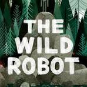
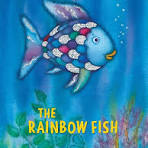

Home |
News |
Events |
Resources |
The Librarian's Corner |
Book Recommendations
Book Recommendations
Check out these must-read books selected by our Librarian of the Month
Books of the Month

The Wild Robot

The Rainbow Fish
 Junie B. Jones and a Little Monkey Business
Junie B. Jones and a Little Monkey Business
Recommended Books by Grade Level
Kindergarten
- Brown Bear, Brown Bear, What Do You See? by Bill Martin Jr. & Eric Carle
- Chicka Chicka Boom Boom by Bill Martin Jr. & John Archambault
- Don't Let the Pigeon Drive the Bus! by Mo Willems
1st Grade
- Frog and Toad Are Friends by Arnold Lobel
- Little Bear by Else Holmelund Minarik
- Amelia Bedelia by Peggy Parish
2nd Grade
- Magic Tree House: Dinosaurs Before Dark by Mary Pope Osborne
- Henry and Mudge by Cynthia Rylant
- Nate the Great by Marjorie Weinman Sharmat
3rd Grade
- Charlotte's Web by E.B. White
- Judy Moody by Megan McDonald
- The Boxcar Children by Gertrude Chandler Warner
4th Grade
- Tales of a Fourth Grade Nothing by Judy Blume
- Because of Winn-Dixie by Kate DiCamillo
- Frindle by Andrew Clements
5th Grade
- Wonder by R.J. Palacio
- Hatchet by Gary Paulsen
- Bridge to Terabithia by Katherine Paterson
6th Grade
- Holes by Louis Sachar
- Percy Jackson and the Olympians: The Lightning Thief by Rick Riordan
- The City of Ember by Jeanne DuPrau